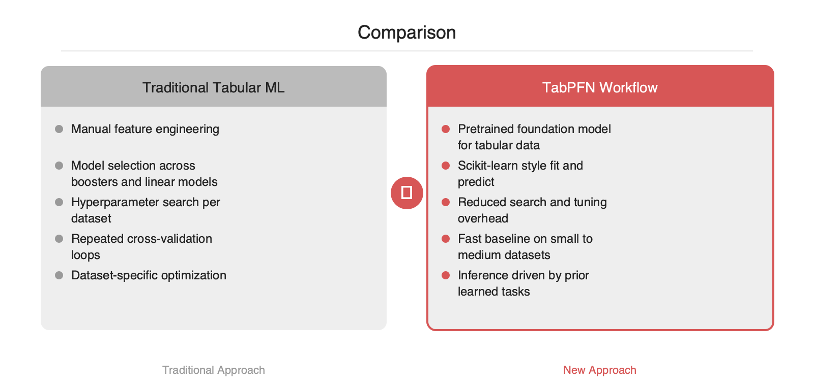

TabPFN은 탭ুল러 데이터를 위해 사전학습된 파운데이션 모델을 앞세워, 전통적인 AutoML·부스팅·피처 엔지니어링 중심 워크플로를 다시 묻게 만드는 프로젝트입니다. 핵심은 개별 데이터셋마다 모델 탐색을 반복하는 대신, 대규모 사전학습으로 축적한 추론 능력을 바로 적용한다는 점입니다. 표 데이터가 여전히 기업 시스템의 중심에 있다는 점, 그리고 LLM 이후 파운데이션 모델 패턴이 비정형을 넘어 구조화 데이터로 확장되고 있다는 점에서 지금 주목할 이유가 분명합니다.
현업의 탭ুল러 모델링은 여전히 반복 비용이 큰 작업입니다. 데이터셋이 바뀔 때마다 XGBoost, LightGBM, CatBoost, 랜덤포레스트, 로지스틱 회귀 같은 후보를 비교하고, 결측치 처리와 범주형 인코딩을 손보고, 교차검증으로 하이퍼파라미터를 다시 탐색하는 과정이 필요합니다. 이 방식은 안정적이지만, 작은 데이터셋이 많고 실험 회전이 잦은 조직일수록 엔지니어링 비용이 빠르게 커집니다.
TabPFN이 겨냥하는 지점은 이 반복입니다. 이 프로젝트는 탭ुल러 데이터 모델링을 데이터셋별 최적화 문제에서, 사전학습된 모델을 불러와 바로 추론하는 문제로 옮기려는 접근입니다.
TabPFN의 핵심 아이디어는 탭ুল러 데이터용 파운데이션 모델입니다. 알려진 방식은 다음과 같습니다.
1. 다양한 합성 태스크와 사전 분포 위에서 모델을 대규모로 사전학습합니다.
2. 이 과정에서 모델은 탭ুল러 분류·회귀 문제에서 자주 등장하는 패턴을 내재화합니다.
3. 추론 시점에는 개별 데이터셋에 대해 긴 하이퍼파라미터 탐색 대신, 학습 데이터와 예측할 샘플을 조건으로 넣어 결과를 산출합니다.
이 접근은 전통적인 트리 부스팅과 다릅니다. 부스팅 계열은 각 데이터셋에서 손실을 줄이도록 모델을 새로 최적화합니다. 반면 TabPFN은 사전학습 단계에서 이미 광범위한 태스크 분포를 학습해 두고, 실제 사용 시에는 그 지식을 가져와 적용하는 구조입니다. 개념적으로는 "탭ुल러 데이터에 대한 사전학습된 추론기"에 가깝습니다.
핵심 차이는 최적화의 위치입니다. 기존 방식은 프로젝트마다 최적화를 다시 수행합니다. TabPFN은 그 비용 일부를 사전학습으로 선반영합니다. 따라서 작은 데이터셋을 자주 다루는 팀, 빠른 베이스라인이 중요한 팀, 모델 선택 비용이 병목인 조직에서 특히 의미가 있습니다.
from tabpfn import TabPFNClassifier
from sklearn.model_selection import train_test_split
from sklearn.metrics import accuracy_score
X_train, X_test, y_train, y_test = train_test_split(X, y, test_size=0.2, random_state=42)
clf = TabPFNClassifier()
clf.fit(X_train, y_train)
pred = clf.predict(X_test)
print(accuracy_score(y_test, pred))
코드 형태만 보면 scikit-learn 스타일 추정기와 유사합니다. 이 점은 실무 도입 장벽을 낮추는 요소입니다. 기존 파이프라인, 평가 코드, 서빙 래퍼에 비교적 쉽게 연결할 수 있습니다.

LLM 이후 소프트웨어 업계는 "사전학습된 범용 모델 + 얇은 태스크 적응"이라는 패턴에 익숙해졌습니다. TabPFN은 이 패턴이 텍스트와 이미지 밖으로 확장될 수 있음을 보여주는 사례입니다. 특히 기업 데이터의 상당수는 여전히 관계형 테이블과 CSV, 피처 스토어에 머물러 있습니다. 그런 점에서 TabPFN은 탭ուլ러 ML을 AutoML의 연장선이 아니라 파운데이션 모델의 연장선에서 다시 보게 만드는 선택지입니다.
실무적으로는 하나의 질문으로 정리할 수 있습니다. "이 데이터셋에서 다시 탐색을 시작할 것인가, 아니면 이미 학습된 탭ुल러 추론기를 먼저 호출할 것인가"입니다. TabPFN이 주는 가치는 바로 이 질문의 기본값을 바꾼다는 데 있습니다.